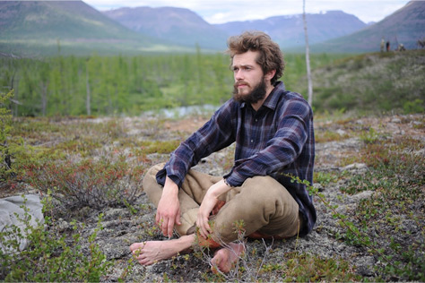

Mamont Foundation
приглашает вас
присоединиться к
уникальной экспедиции
в сердце Сибири!
Плато Путорана - недоступная земля
в Арктической России, куда имеют
мужество добраться единицы.
НИКАКИХ ГОРОДОВ.
НИКАКОЙ ЦИВИЛИЗАЦИИ. Искать приключения!
Mamont Cup 2016
– это вызов для каждого, кто считает себя смелым и сильным духом.
Если лавры первопроходца не дают тебе покоя, если ты не боишься оказаться наедине
с неизведанным, тебя не беспокоит отсутствие связи и цивилизации, то присоединяйся
к нам в увлекательном путешествии на таинственную землю.
Возглавит экспедицию актер и режиссер, обладатель приза Берлинского кинофестиваля за роль полярника в фильме «Как я провел этим летом»
Григорий Добрыгин.
Несколько лет назад он провел всю зиму и лето на плато, участвуя в съемках фильма «Территория», поэтому знает эти места лучше многих.

УЧАСТВУЙ В КОНКУРСЕ
«В ПОИСКАХ ПРИКЛЮЧЕНИЙ»!
Чтобы принять участие в конкурсе и отправиться в экспедицию, поделись с нами
видео о своем самом невероятном приключении. Возможно, ты покорил Аконкагуа,
пересек Дракенсберг или прошел путем Авраама через Иорданию? Тебе не впервой
сталкиваться с вызовами и испытаниями дикой природы?
Тогда запиши видеоролик (не более 1 мин.) с рассказом о своем путешествии, загрузи
на сайт и, возможно, именно ты окажешься на плато Путорана!
Жюри, в лице Григория Добрыгина и Тамары Мазур – официального представителя
Mamont Foundation, выберет 6 отважных путешественников, которые отправятся
на поиски приключений!
Искать приключения! Правила конкурса